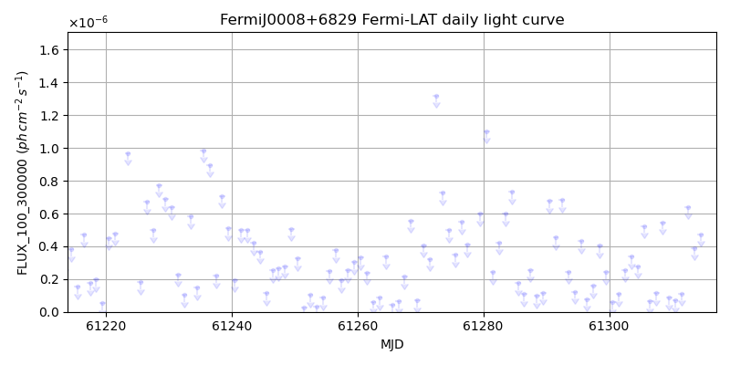
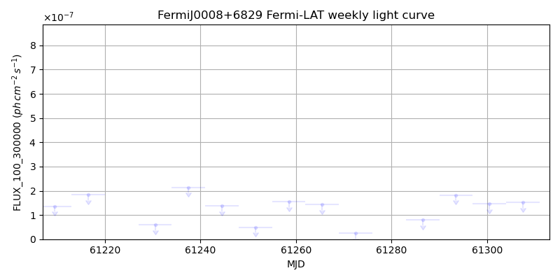
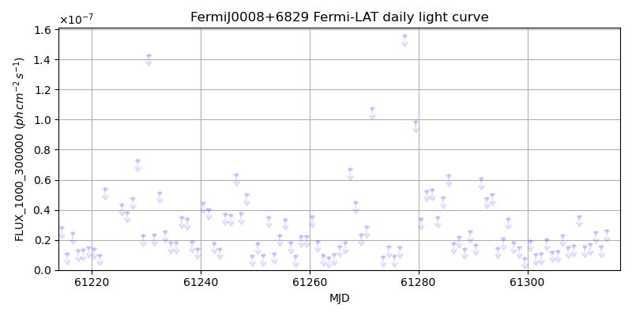
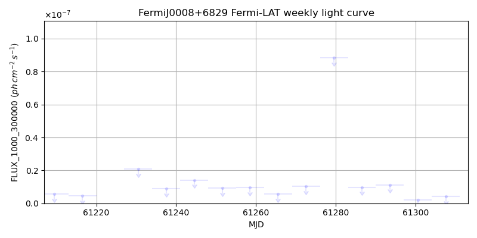

LAT Lightcurve site: https://fermi.gsfc.nasa.gov/ssc/data/access/lat/msl_lc/source/Fermi_J0008p6829
NED: Query
Time of last update of this page: UT: 2026-10-02 15:10 (MJD: 61315.632)
| Property | Value |
|---|---|
| R.A. | 0:08:20.64 |
| Dec. | 68:34:44.4 |
| z | 0.000 |
| 3FGL SpectrumType | |
| 3FGL PL Index | -1.00 |
| 3FGL Flux_100_300000 | -1.00e+00 |
| 3FGL Flux_1000_300000 | -1.00e+00 |
| 3FGL Flux >200 GeV | -1.00e+00 |
| 3FGL Extrap. Crab >200 GeV | -1.00 |
| 3FGL Flux After EBL Absorption >200GeV | -1.00e+00 |
| 3FGL EBL Crab Fraction >200GeV | -1.00 |

| MJD | dMJD | Flux | dFlux | Frac3FGL | FracCrab>200GeV | EBLFracCrab>200GeV |
|---|---|---|---|---|---|---|
| 61310.50 | 0.50 | 7.16e-08 | 0.00e+00 | 0.00 | 0.00 | -0.00 |
| 61311.50 | 0.50 | 1.12e-07 | 0.00e+00 | 0.00 | 0.00 | -0.00 |
| 61312.50 | 0.50 | 6.40e-07 | 0.00e+00 | 0.00 | 0.00 | -0.00 |
| 61313.50 | 0.50 | 3.90e-07 | 0.00e+00 | 0.00 | 0.00 | -0.00 |
| 61314.50 | 0.50 | 4.74e-07 | 0.00e+00 | 0.00 | 0.00 | -0.00 |

| MJD | dMJD | Flux | dFlux | Frac3FGL | FracCrab>200GeV | EBLFracCrab>200GeV |
|---|---|---|---|---|---|---|
| 61279.50 | 3.50 | 1.74e-06 | 0.00e+00 | 0.00 | 0.00 | -0.00 |
| 61286.50 | 3.50 | 7.92e-08 | 0.00e+00 | 0.00 | 0.00 | -0.00 |
| 61293.50 | 3.50 | 1.83e-07 | 0.00e+00 | 0.00 | 0.00 | -0.00 |
| 61300.50 | 3.50 | 1.47e-07 | 0.00e+00 | 0.00 | 0.00 | -0.00 |
| 61307.50 | 3.50 | 1.52e-07 | 0.00e+00 | 0.00 | 0.00 | -0.00 |

| MJD | dMJD | Flux | dFlux | Frac3FGL | FracCrab>200GeV | EBLFracCrab>200GeV |
|---|---|---|---|---|---|---|
| 61310.50 | 0.50 | 1.54e-08 | 0.00e+00 | 0.00 | 0.00 | -0.00 |
| 61311.50 | 0.50 | 1.71e-08 | 0.00e+00 | 0.00 | 0.00 | -0.00 |
| 61312.50 | 0.50 | 2.49e-08 | 0.00e+00 | 0.00 | 0.00 | -0.00 |
| 61313.50 | 0.50 | 1.56e-08 | 0.00e+00 | 0.00 | 0.00 | -0.00 |
| 61314.50 | 0.50 | 2.59e-08 | 0.00e+00 | 0.00 | 0.00 | -0.00 |

| MJD | dMJD | Flux | dFlux | Frac3FGL | FracCrab>200GeV | EBLFracCrab>200GeV |
|---|---|---|---|---|---|---|
| 61279.50 | 3.50 | 8.84e-08 | 0.00e+00 | 0.00 | 0.00 | -0.00 |
| 61286.50 | 3.50 | 9.83e-09 | 0.00e+00 | 0.00 | 0.00 | -0.00 |
| 61293.50 | 3.50 | 1.12e-08 | 0.00e+00 | 0.00 | 0.00 | -0.00 |
| 61300.50 | 3.50 | 2.02e-09 | 0.00e+00 | 0.00 | 0.00 | -0.00 |
| 61307.50 | 3.50 | 4.19e-09 | 0.00e+00 | 0.00 | 0.00 | -0.00 |
--------------------------------------------------------- Using user-supplied coords: 0:08:20.64 68:34:44.4 2000 --------------------------------------------------------- FLWO UT night of: 2026-10-03 Local Sid. @ Midnight: 00:24 Sunset (-15.0) (local, UT): 19:14 02:14 Sunrise (-15.0) (local, UT): 05:12 12:12 Moonrise (local, UT): 22:48 05:48 Moonset (local, UT): Moon phase: 0.53 --------------------------------------------------------- AzTime LSID UT Obj_el Obj_az Mn_el Mn_az Sep. --------------------------------------------------------- 19:14 19:37 02:14 37.2 25.0 -28.5 20.1 65.9 19:44 20:07 02:44 39.9 24.3 -26.2 26.7 66.0 20:14 20:37 03:14 42.4 23.1 -23.2 32.8 66.2 20:44 21:07 03:44 44.9 21.4 -19.6 38.5 66.3 21:14 21:37 04:14 47.1 19.2 -15.7 43.6 66.5 21:44 22:07 04:44 49.1 16.3 -11.3 48.4 66.6 22:14 22:37 05:14 50.7 12.9 -6.5 52.7 66.7 22:44 23:07 05:44 51.9 9.0 -0.8 56.7 66.9 23:14 23:37 06:14 52.7 4.8 3.8 60.4 67.0 23:44 00:07 06:44 53.0 0.3 9.1 63.9 67.1 00:14 00:38 07:14 52.7 355.8 14.6 67.1 67.2 00:44 01:08 07:44 52.0 351.5 20.3 70.2 67.3 01:14 01:38 08:14 50.9 347.5 26.1 73.1 67.4 01:44 02:08 08:44 49.3 344.1 32.1 76.0 67.5 02:14 02:38 09:14 47.4 341.1 38.1 78.8 67.6 02:44 03:08 09:44 45.2 338.8 44.2 81.7 67.6 03:14 03:38 10:14 42.8 337.0 50.3 84.8 67.7 03:44 04:08 10:44 40.2 335.8 56.5 88.1 67.8 04:14 04:38 11:14 37.5 335.1 62.7 91.9 67.9 04:44 05:08 11:44 34.8 334.8 68.9 96.9 68.0 05:12 05:37 12:12 32.2 334.9 74.7 103.8 68.1 --------------------------------------------------------- Source never above horizon of 55.0 deg. Dark hours >55 deg.: 0.00